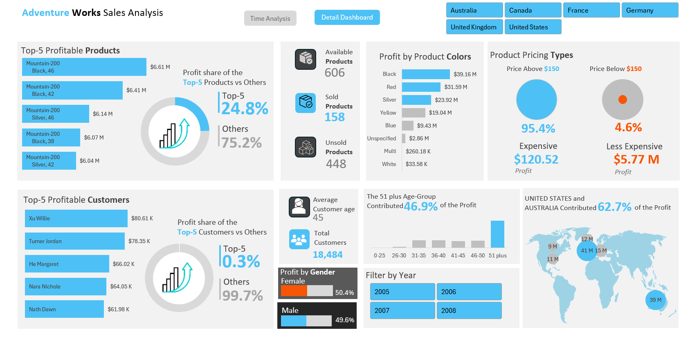

AdventureWorks Sales Analysis – Interactive Excel Dashboard
A business-focused case study analyzing multi-year sales performance using interactive Excel dashboards.
📘 Project Overview
This project presents an interactive Excel dashboard designed to help AdventureWorks understand its sales
performance across products, customers, time periods, and regions. Using advanced formulas, Pivot Tables,
slicers, and macros, I converted raw sales data into a dynamic decision-support tool.
📊 Case Study: Solving a Real Business Problem
Business Challenge
AdventureWorks’ leadership needed a consolidated view of overall sales performance. Their existing reporting
was fragmented, making it difficult to answer key business questions:
- Which product categories produce the highest profit margins?
- What customer age groups contribute most to revenue?
- Which regions generate consistent growth?
- How does performance vary across years, months, and weekdays?
Analytical Approach
I implemented a structured analytical workflow:
- Cleaned & standardized raw sales data
- Created Pivot Tables and Pivot Charts for multi-variable exploration
- Used advanced Excel formulas (INDEX-MATCH, IFS, logical expressions)
- Added slicers for real-time filtering
- Built two dashboards (Time Analysis & Detail Analysis)
- Automated navigation with macros
Key Business Insights
- High-priced products (> $150) contribute 95% of total profit.
- Customers aged 51+ account for 47% of all revenue.
- The years 2007–2008 generated 67% of total profits.
- U.S. & Australia combined account for 62.7% of profits.
- Weekday performance drives 72% of overall profit.
Business Impact
The company can now confidently prioritize profitable demographic groups, focus marketing on top-performing
regions, and plan inventory based on high-value product segments. The dashboards provide instant answers for
strategic planning.
🛠️ Tools Used
- Microsoft Excel
- Pivot Tables & Pivot Charts
- Slicers & Interactive Buttons
- Advanced Formulas
- Macros (VBA)
🖼️ Dashboards
Sales Performance & Profit Insights

Product & Customer Insights
